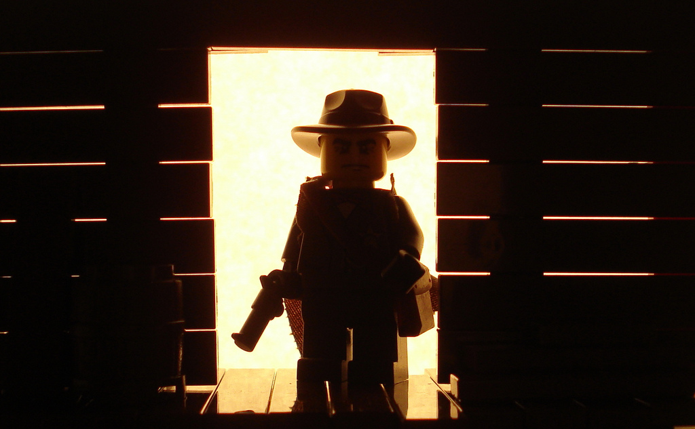

Movie Review 'A Million Ways to Die in the West'

This is "Coma to the Movies" with Leo Johnston, sleep disorder movie reviewer. Leo earned his M.A. from Chippewa University in Film and Sleep Studies where he honed his skill to analyze film while resting his eyes.
By Leo Johnson:
EMToast Press
Film: A Million Ways to Die in the West
Starring: Seth McFarlane
Directed by: Seth McFarlane
Leo's Rating: 0 Toasts.
Los Angeles--Let me first start off by saying, I make it a point to finish any movie once I start watching it. No matter how long, boring or badly acted, I find a way to finish watching. It's a compulsion. Whether it be the House Bunny, Twilight, or the sleep inducing Beyond the Black Rainbow, -- all difficult watches in their own ways -- I finish. A Million Ways to Die in the West was unfinishable. So poor that I had to shut it off and switch to a different comedy. Seth McFarlane is an Adam Sandler wannabe, but unlike Sandler he's not able to carry a movie. (Note: I hate Adam Sandler) He may be successful as a cartoon voice. He was successful as a CGI bear, but without those gimmicks to fall back on he fails. Face it McFarlane you have a weird face and you're not going to be a star. You need a leading man like a Wahlberg to carry the movie while you dress in your bear costume to make your comedy jokes.
You filled the movie with an all star cast. Including Sara Silverman, Giovanni Ribisi, Amada Seyfried, Neil Patrick Harris, and Liam Neeson. Perhaps next time you should let one of those guys take the lead and you can play a CGI horse. Sorry man, you just don't have the star power for this. You also need to learn how to edit.
We don't need a 5 minute intro shot of deserts and credits to get the movie rolling. We already sat through 45 minutes of movie trailers to get here. Save that shit for the end.
The worst part is that the movie was just not funny. A more likeable actor may have been able to pull off some of your weak comedy using their charisma, but you pal don't have it.
I only made it as far as the point where you started actually listing out all the ways you can die in the west and complaining about it. I had to shut it off. It's poor form to write a review directly to the actor/director for that I apologize.
I can't apologize for turning this one off and watching Bad Words instead. Now that was a great funny movie and Justin Bateman has just enough star power to pull off the Director /Star role. 5 toasts for Bad Words. No further review needed.
Seth McFarlane. Go away.
Photo by Profound Whatever 
Related posts

In Theaters This Week: The Wrestler: Feel Good Movie of the Year
Check it out people! The Wrestler from Fox Searchlight Pictures opened in theaters this week. Charlize Theron has reprised her…

Better Never than Late Game Review-Guitar Hero Aerosmith
I wrote this tirade on this game tape a few months back and it was just lingering in Word Press…

Supa-Man Lova: All Star Superman & Superman: Kryptonite TPB Reviews
When I was about 6 years old I had a Dad crafted fort in my back yard. It was basically…

"No Doy" Cat Billboard Sneak Preview
This fall EMToast will begin a Billboard marketing campaign in select cities. This is the sneak preview of the “No…